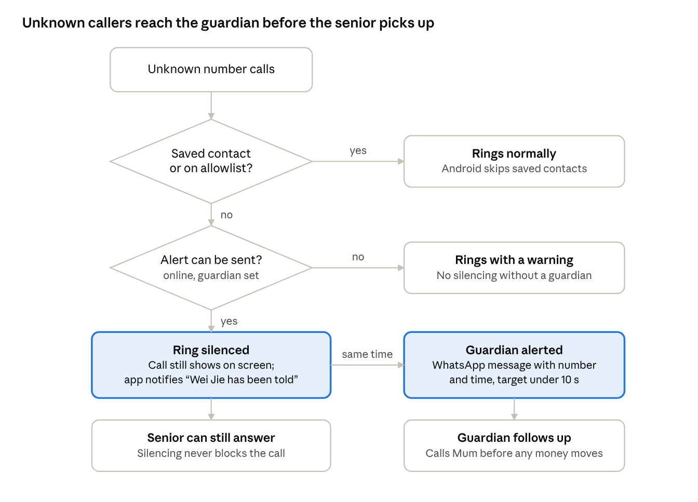
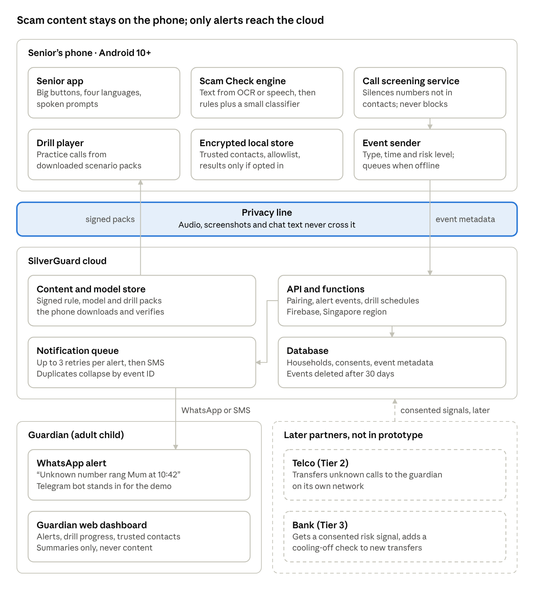

Scams cost Singapore S$913.1 million in 2025
SilverGuard
AI
We flag the scam script, not the voice.
The problem
15%
of 2025 victims were 65+
S$37,000
average senior loss, highest [1]
20.7%
of citizens are 65+ [2]
S$913.1 million covers all scam types [3]. Voice-clone “family emergency” calls exploit time pressure and willingness to help [4].
Blind spots
- Listeners often take clones for real [5]
- Detectors weaken on real-world audio [6]
- ScamShield can’t block WhatsApp calls [7]
Three layers
Before answering
Guardian Alert: unknown calls silenced, never blocked
During the scam
Pause & Verify, Scam Check, Family Drill
Before money moves
Partner-bank cooling-off check, later

How it decides
Script cues: money request, secrecy, new number, urgency, authority, emotional pressure.
- High risk
- Check with family
- No warning signs found
Never “safe”.
Audio, screenshots and chat text never leave the phone. Only the alert does.

Business case
- Users: seniors
- Payers: adult children
- Partners: telco, bank (later)
- Seed ask: S$500,000 for MVP, 200-household pilot
How we changed
- Assignment 1 [Team: one-line position]
- Feedback Business lens, peer-reviewed sources, local context.
- Now Script, not voice; family in the loop; partners later.
Validation
Grandparents said:
Quote needed
Quote needed
Quote needed
Scam Check demo: 15/15 on a 15-message test set the team wrote itself; real-world accuracy not yet measured.
Risks and limits
- False alarmsnever “safe”
- Family misusesenior controls guardian
- Dialects“Couldn’t check; ask family”
- iPhone, app callsScam Check still works
Sources [1] MHA, 2026. [2] NPTD et al., 2025. [3] SPF, 2026a. [4] Stajano & Wilson, 2011. [5] Barrington et al., 2025. [6] Müller et al., 2022. [7] ScamShield, n.d.
AI use: Claude drafted; team checks and edits. Log: repository.